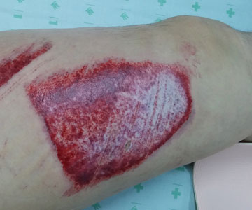
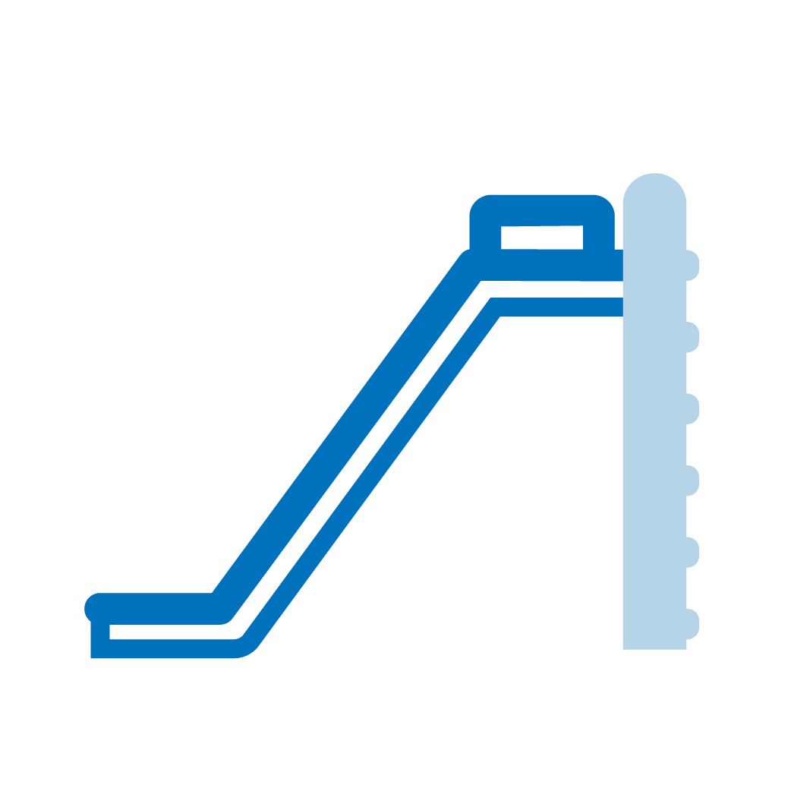

· 원인

· 특징
① 마찰에 의해 발생하는 열뿐만 아니라 마찰 자체도 피부에 기계적인 손상을 유발합니다.
② 레저활동이 증가하는 시기에 많아집니다.
③ 아스팔트에서 발생한 경우 아스팔트 이물질이 손상피부에 침착되는 경우가 있으며, 방치시 영구침착으로 이어질 수 있습니다.
④ 손상면이 지저분한 경우가 많으며(특히 흙바닥에서 손상된 경우) 감염이나 이물반응에 의한 염증이 쉽게 올 수 있습니다. 감염이나 이물반응은 상처의 깊이를 악화 시킵니다.